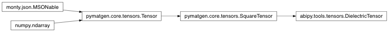
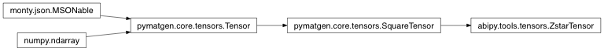
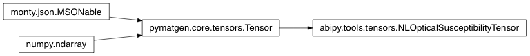

Contents
tools Module¶Helper functions.
abipy.tools.hasattrd(obj, name)[source]¶The arguments are an object and a string. The result is True if the string is the name of one of the object’s attributes, False if not. Unlike the builtin hasattr, hasattrd supports dot notation e.g. hasattr(int, “__class__.__name__”) (This is implemented by calling getattrd(object, name) and seeing whether it raises an exception or not.)
abipy.tools.getattrd(obj, name, default=<class 'abipy.tools.NoDefaultProvided'>)[source]¶Same as getattr(), but allows dot notation lookup e.g. getattrd(obj, “a.b”)
Raises: AttributeError if name is not found and default is not given.
Discussed in: http://stackoverflow.com/questions/11975781
bessel Module¶This module provides functions to compute integrals of Bessel functions.
abipy.tools.bessel.spline_int_jlqr(l, qmax, rcut, numq=None, numr=None)[source]¶Compute \(j_n(z) = \int_0^{rcut} r^2 j_l(qr) dr\) where \(j_l\) is the Spherical Bessel function.
| Parameters: |
|
|---|---|
| Returns: | Spline object. |
decorators Module¶Decorators.
derivatives Module¶Tools for computing derivatives by finite differences.
abipy.tools.derivatives.finite_diff(arr, h, order=1, acc=4)[source]¶Compute the derivative of order order by finite difference. For each point in arr, the function tries to use central differences and fallbacks to forward/backward approximations for points that are close to the extrema. Note that high accuracy levels can fail and raise ValueError if not enough points are available in arr.
| Parameters: |
|
|---|---|
| Returns: | numpy array. |
devtools Module¶abipy.tools.devtools.profile(statement, global_vars, local_vars)[source]¶Run statement under profiler, supplying your own globals and locals
Example:
stats = profile("main()", global_vars=globals(), local_vars=locals())
abipy.tools.devtools.HtmlDiff(filepaths)[source]¶Bases: object
This object produces diff files in HTML format and displays them in the browser.
Usage example:
HtmlDiff(filepaths).open_browser()
open_browser(diffmode='difflib', **kwargs)[source]¶Generate diff with diffmode, open browser, return exit code.
duck Module¶Duck-typing tests
abipy.tools.duck.is_intlike(obj)[source]¶True if obj represents an integer (float such as 1.0 are included as well).
abipy.tools.duck.list_ints(arg)[source]¶Always return a list of int, given a int or list of integers as input.
| Examples: |
|---|
>>> list_ints(1)
[1]
fftprof Module¶Python interface to fftprof. Provides objects to benchmark the FFT libraries used by ABINIT and plot the results with matplotlib.
abipy.tools.fftprof.FFTBenchmark(title, FFT_tests)[source]¶Bases: object
Container class storing the results of the FFT benchmark.
Use the class method from_file to generate a new instance.
plot(exclude_algs=None, exclude_threads=None, **kwargs)[source]¶Plot the wall-time and the speed-up.
Keyword arguments controlling the display of the figure:
| kwargs | Meaning |
|---|---|
| title | Title of the plot (Default: None). |
| show | True to show the figure (default: True). |
| savefig | “abc.png” or “abc.eps” to save the figure to a file. |
| size_kwargs | Dictionary with options passed to fig.set_size_inches e.g. size_kwargs=dict(w=3, h=4) |
| ax_grid | True (False) to add (remove) grid from all axes in fig. Default: None i.e. fig is left unchanged. |
| tight_layout | True to call fig.tight_layout (default: False) |
iotools Module¶IO related utilities.
abipy.tools.iotools.ask_yes_no(prompt, default=None)[source]¶Ask a question and return a boolean (y/n) answer.
If default is given (one of ‘y’,’n’), it is used if the user input is empty. Otherwise the question is repeated until an answer is given.
An EOF is treated as the default answer. If there is no default, an exception is raised to prevent infinite loops.
Valid answers are: y/yes/n/no (match is not case sensitive).
abipy.tools.iotools.EditorError[source]¶Bases: Exception
Base class for exceptions raised by Editor
notebooks Module¶Tools for ipython notebooks.
abipy.tools.notebooks.print_source_in_module(function, module)[source]¶For use inside an jupyter notebook: given a module and a function, print the source code.
Based on:
abipy.tools.notebooks.print_source(function, **kwargs)[source]¶For use inside a jupyter notebook: given a function, print the source code.
| Parameters: | **kwargs – Passed to HtmlFormatter |
|---|---|
| Returns: | HTML string. |
abipy.tools.notebooks.print_doc(function, **kwargs)[source]¶For use inside a jupyter notebook: given a function, print the docstring.
| Parameters: | **kwargs – Passed to HtmlFormatter |
|---|---|
| Returns: | HTML string. |
abipy.tools.notebooks.ipw_listdir(top='.', recurse=True, widget_type='dropdown')[source]¶Return an ipython widget listing all the files located within the directory top
that can be inspected with abiopen.py. The user can select the file in the widget
and print info on the corresponding file inside the notebook.
| Parameters: |
|
|---|
numtools Module¶Numeric tools.
abipy.tools.numtools.transpose_last3dims(arr)[source]¶Transpose the last three dimensions of arr: (…,x,y,z) –> (…,z,y,x).
abipy.tools.numtools.add_periodic_replicas(arr)[source]¶Returns a new array of shape=(…, nx+1,ny+1,nz+1) with redundant data points.
Periodicity in enforced only on the last three dimensions.
abipy.tools.numtools.data_from_cplx_mode(cplx_mode, arr, tol=None)[source]¶Extract the data from the numpy array arr depending on the values of cplx_mode.
| Parameters: |
|
|---|
abipy.tools.numtools.alternate(*iterables)[source]¶[a[0], b[0], … , a[1], b[1], …, a[n], b[n] …] >>> alternate([1,4], [2,5], [3,6]) [1, 2, 3, 4, 5, 6]
abipy.tools.numtools.iflat(iterables)[source]¶Iterator over all elements of a nested iterable. It’s recursive!
>>> list(iflat([[0], [1,2, [3,4]]]))
[0, 1, 2, 3, 4]
abipy.tools.numtools.grouper(n, iterable, fillvalue=None)[source]¶>>> assert grouper(3, "ABCDEFG", "x") == [('A', 'B', 'C'), ('D', 'E', 'F'), ('G', 'x', 'x')]
>>> assert grouper(3, [1, 2, 3, 4]) == [(1, 2, 3), (4, None, None)]
abipy.tools.numtools.sort_and_groupby(items, key=None, reverse=False, ret_lists=False)[source]¶Sort items using key function and invoke itertools.groupby to group items.
If ret_lists is True, a tuple of lists (keys, groups) is returned else iterator.
See itertools.groupby for further info.
>>> sort_and_groupby([1, 2, 1], ret_lists=True)
([1, 2], [[1, 1], [2]])
abipy.tools.numtools.prune_ord(alist)[source]¶Return new list where all duplicated items in alist are removed
Taken from http://code.activestate.com/recipes/52560/ >>> prune_ord([1, 1, 2, 3, 3]) [1, 2, 3]
abipy.tools.numtools.gaussian(x, width, center=0.0, height=None)[source]¶Returns the values of gaussian(x) where x is array-like.
| Parameters: |
|
|---|
abipy.tools.numtools.lorentzian(x, width, center=0.0, height=None)[source]¶Returns the values of gaussian(x) where x is array-like.
| Parameters: |
|
|---|
abipy.tools.numtools.smooth(x, window_len=11, window='hanning')[source]¶smooth the data using a window with requested size.
This method is based on the convolution of a scaled window with the signal. The signal is prepared by introducing reflected copies of the signal (with the window size) in both ends so that transient parts are minimized in the begining and end part of the output signal. Taken from http://www.scipy.org/Cookbook/SignalSmooth
| Parameters: |
|
|---|---|
| Returns: | the smoothed signal. |
example:
t = linspace(-2,2,0.1)
x = sin(t)+randn(len(t))*0.1
y = smooth(x)
see also:
numpy.hanning, numpy.hamming, numpy.bartlett, numpy.blackman, numpy.convolve scipy.signal.lfilter
TODO: the window parameter could be the window itself if an array instead of a string
abipy.tools.numtools.find_convindex(values, tol, min_numpts=1, mode='abs', vinf=None)[source]¶Given a list of values and a tolerance tol, returns the leftmost index for which
abs(value[i] - vinf) < tol if mode == “abs”
| Parameters: |
|
|---|---|
| Returns: | -1 if convergence is not achieved else the index in values. |
abipy.tools.numtools.BlochRegularGridInterpolator(structure, datar, add_replicas=True)[source]¶Bases: object
This object interpolates the periodic part of a Bloch state in real space.
eval_line(point1, point2, num=200, cartesian=False, kpoint=None)[source]¶Interpolate values along a line.
| Parameters: |
|
|---|
eval_points(frac_coords, idt=None, cartesian=False, kpoint=None)[source]¶Interpolate values on an arbitrary list of points.
| Parameters: |
|
|---|---|
| Returns: | [ndt, npoints] array or [1, npoints] if idt is not None |
plotting Module¶Utilities for generating matplotlib plots.
Note
Avoid importing matplotlib in the module namespace otherwise startup is very slow.
abipy.tools.plotting.set_axlims(ax, lims, axname)[source]¶Set the data limits for the axis ax.
| Parameters: |
|
|---|
Return: (left, right)
abipy.tools.plotting.plot_array(array, color_map=None, cplx_mode='abs', **kwargs)[source]¶Use imshow for plotting 2D or 1D arrays.
Example:
plot_array(np.random.rand(10,10))
See <http://stackoverflow.com/questions/7229971/2d-grid-data-visualization-in-python>
| Parameters: |
|
|---|
Returns: matplotlib.figure.Figure
Keyword arguments controlling the display of the figure:
kwargs Meaning title Title of the plot (Default: None). show True to show the figure (default: True). savefig “abc.png” or “abc.eps” to save the figure to a file. size_kwargs Dictionary with options passed to fig.set_size_inches e.g. size_kwargs=dict(w=3, h=4) ax_grid True (False) to add (remove) grid from all axes in fig. Default: None i.e. fig is left unchanged. tight_layout True to call fig.tight_layout (default: False)
abipy.tools.plotting.ArrayPlotter(*labels_and_arrays)[source]¶Bases: object
add_arrays(labels, arr_list)[source]¶Add a list of arrays
| Parameters: |
|
|---|
plot(cplx_mode='abs', colormap='jet', fontsize=8, **kwargs)[source]¶| Parameters: |
|
|---|
Returns: matplotlib.figure.Figure
Keyword arguments controlling the display of the figure:
| kwargs | Meaning |
|---|---|
| title | Title of the plot (Default: None). |
| show | True to show the figure (default: True). |
| savefig | “abc.png” or “abc.eps” to save the figure to a file. |
| size_kwargs | Dictionary with options passed to fig.set_size_inches e.g. size_kwargs=dict(w=3, h=4) |
| ax_grid | True (False) to add (remove) grid from all axes in fig. Default: None i.e. fig is left unchanged. |
| tight_layout | True to call fig.tight_layout (default: False) |
abipy.tools.plotting.Marker[source]¶Bases: abipy.tools.plotting.Marker
Stores the position and the size of the marker. A marker is a list of tuple(x, y, s) where x, and y are the position in the graph and s is the size of the marker. Used for plotting purpose e.g. QP data, energy derivatives…
Example:
x, y, s = [1, 2, 3], [4, 5, 6], [0.1, 0.2, -0.3]
marker = Marker(x, y, s)
marker.extend((x, y, s))
abipy.tools.plotting.plot_unit_cell(lattice, ax=None, **kwargs)[source]¶Adds the unit cell of the lattice to a matplotlib Axes3D
| Parameters: |
|
|---|---|
| Returns: | matplotlib figure and ax |
abipy.tools.plotting.GenericDataFilePlotter(filepath)[source]¶Bases: object
Extract data from a generic text file with results in tabular format and plot data with matplotlib. Multiple datasets are supported. No attempt is made to handle metadata (e.g. column name) Mainly used to handle text files written without any schema.
plot(use_index=False, fontsize=8, **kwargs)[source]¶Plot all arrays. Use multiple axes if datasets.
| Parameters: |
|
|---|
Return: matplotlib.figure.Figure
Keyword arguments controlling the display of the figure:
| kwargs | Meaning |
|---|---|
| title | Title of the plot (Default: None). |
| show | True to show the figure (default: True). |
| savefig | “abc.png” or “abc.eps” to save the figure to a file. |
| size_kwargs | Dictionary with options passed to fig.set_size_inches e.g. size_kwargs=dict(w=3, h=4) |
| ax_grid | True (False) to add (remove) grid from all axes in fig. Default: None i.e. fig is left unchanged. |
| tight_layout | True to call fig.tight_layout (default: False) |
abipy.tools.plotting.GenericDataFilesPlotter[source]¶Bases: object
plot(use_index=False, fontsize=8, colormap='viridis', **kwargs)[source]¶Plot all arrays. Use multiple axes if datasets.
| Parameters: |
|
|---|
Return: matplotlib.figure.Figure
Keyword arguments controlling the display of the figure:
| kwargs | Meaning |
|---|---|
| title | Title of the plot (Default: None). |
| show | True to show the figure (default: True). |
| savefig | “abc.png” or “abc.eps” to save the figure to a file. |
| size_kwargs | Dictionary with options passed to fig.set_size_inches e.g. size_kwargs=dict(w=3, h=4) |
| ax_grid | True (False) to add (remove) grid from all axes in fig. Default: None i.e. fig is left unchanged. |
| tight_layout | True to call fig.tight_layout (default: False) |
abipy.tools.plotting.get_ax_fig_plt(ax=None, **kwargs)[source]¶Helper function used in plot functions supporting an optional Axes argument. If ax is None, we build the matplotlib figure and create the Axes else we return the current active figure.
| Parameters: | kwargs – keyword arguments are passed to plt.figure if ax is not None. |
|---|---|
| Returns: | Axes object
figure: matplotlib figure
plt: matplotlib pyplot module. |
| Return type: | ax |
abipy.tools.plotting.get_ax3d_fig_plt(ax=None, **kwargs)[source]¶Helper function used in plot functions supporting an optional Axes3D argument. If ax is None, we build the matplotlib figure and create the Axes3D else we return the current active figure.
| Parameters: | kwargs – keyword arguments are passed to plt.figure if ax is not None. |
|---|---|
| Returns: | Axes object
figure: matplotlib figure
plt: matplotlib pyplot module. |
| Return type: | ax |
abipy.tools.plotting.data_from_cplx_mode(cplx_mode, arr, tol=None)[source]¶Extract the data from the numpy array arr depending on the values of cplx_mode.
| Parameters: |
|
|---|
tensors Module¶This modules provides subclasses of pymatgen tensor objects.
abipy.tools.tensors.Stress[source]¶Bases: pymatgen.analysis.elasticity.stress.Stress, abipy.tools.tensors._Tensor33
Stress tensor. rank2 symmetric tensor with shape [3, 3].
Inheritance Diagram
abipy.tools.tensors.DielectricTensor[source]¶Bases: pymatgen.core.tensors.SquareTensor, abipy.tools.tensors._Tensor33
Subclass of pymatgen.analysis.elasticity.tensors.Tensor describing a dielectric tensor.
rank2 symmetric tensor with shape [3, 3].
Inheritance Diagram
abipy.tools.tensors.ZstarTensor[source]¶Bases: pymatgen.core.tensors.SquareTensor, abipy.tools.tensors._Tensor33
Born effective charge tensor (for a single atom).
Inheritance Diagram
abipy.tools.tensors.NLOpticalSusceptibilityTensor[source]¶Bases: pymatgen.core.tensors.Tensor
Subclass of pymatgen.analysis.elasticity.tensors.Tensor containing the non-linear optical susceptibility tensor.
Inheritance Diagram
text Module¶Utilities for working with strings and text.
abipy.tools.text.tonumber(s)[source]¶Convert string to number, raise ValueError if s cannot be converted.
abipy.tools.text.rreplace(s, old, new, occurrence)[source]¶replace old with new in string but, instead of starting from the beginning as replace does, starting from the end.
>>> s = '1232425'
>>> assert rreplace(s, '2', ' ', 2) == '123 4 5'
>>> assert rreplace(s, '2', ' ', 3) == '1 3 4 5'
>>> assert rreplace(s, '2', ' ', 4) == '1 3 4 5'
>>> assert rreplace(s, '2', ' ', 0) == '1232425'